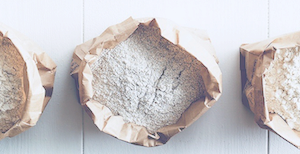
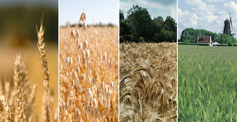
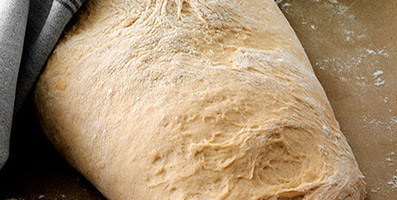
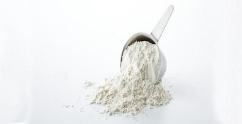

om amo
kontakt
amo bageskole
amo play
opskrifter
amo klassikere
kage
brød
mad
glutenfrie opskrifter
juleopskrifter
produkter
nyheder
alle produkter (a-å)
mel
brød- og bolleblandinger
kageblandinger
glutenfri
☰
amo bageskole

Amo melguide
Valget af mel afhænger af, hvilket bagværk du ønsker at lave. Skal brødet for eksempel være groft, have en sprød rustik skorpe ell...

Korn
Lær mere om kornet egenskaber, struktur og hvilken indvirkning det har på forskellige mel og brød gæring. Protein og gluten Hvedem...
Amo bageteknikker
Når du bladrer i dine bagebøger støder du ofte på en lang række fagudtryk. Her finder du forklaringer på, hvad ordene fordej, hævn...
Amo bagetips
Alle bagere har nogle tricks, der gør bagværket ekstra lækkert. Ofte er disse tricks hemmelige, men hos Amo deler vi gerne ud af v...

De 7 grunddeje
Det er nemt og hyggeligt at bage selv. Al slags bagværk, med få undtagelser, er varianter af 7 forskellige typer grunddeje. Kender...

Så meget vejer ingredienser
Tabel som viser, hvor meget 1 tsk., 1 spsk. og 1 dl af forskellige ingredienser vejer.